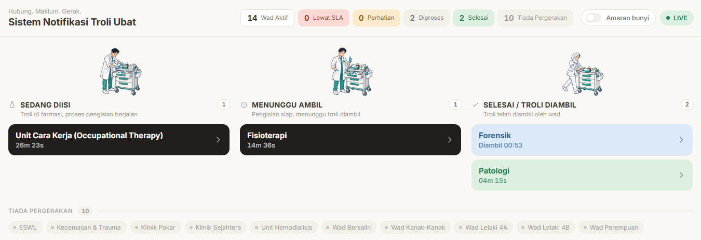

FLAMYNGo
FLAMYNGo Hospital Yan · KIK 2026
Farmasi
PharmacyWad
Ward?
Troli bergerak.
Tetapi statusnya?
02 The Problem
Status troli bergantung pada telefon & semakan manual.
Kesilapan
1–3×
kesilapan ubat
sebulan
sebulan
Kerosakan
1–2×
pecah / tumpah
sebulan
sebulan
Masa
>15 min
semakan farmasi
& jururawat
& jururawat
terlalu lama!
Baseline projek · Unit Kecemasan & Wad Melor 1–4
03 The Innovation
Satu inovasi. Dua komponen.
Physical
Troli
Sistematik
Sistematik
Ubat disusun ikut kategori — bukan ikut kebiasaan.
Digital
Notifikasi
Masa Nyata
Masa Nyata
Status troli kelihatan serta-merta, tanpa semakan fizikal.
+
Satu QR. Satu aliran kerja.
04 Physical

Direka ikut kategori ubat.
A
Oral solids
Tablet & ubat pulangan — berasingan.
B
IV & injections
Ruang khusus untuk ubat suntikan.
C
Liquids & fridge
Cecair & ubat berat diasingkan.
Koper FLAMYNGo™ · 40 × 35 × 25 cm · fabrikasi bersama KEDA
05 Digital
Satu QR. Tiga status.
1
Wad
Troli dihantar
2
Farmasi
Pengisian ubat selesai
3
Wad
Troli ubat telah diambil
Eskalasi automatik
jika status tidak disahkan dalam 15 minit
paparan wad, kemaskini automatik →
06 Live Data
Bukan konsep. Sistem sebenar.

data sebenar ↗
14 wad, satu skrin ↗
0%
pematuhan piagam ≤ 4 jam
0
rekod pergerakan troli
0+
wad / unit terlibat
Data awal fasa pilot · 15–21 Ogos 2026
Connect.
Alert.
Move.
KIK 2026 · Hospital Yan · adzry.github.io/FLAMYNGo